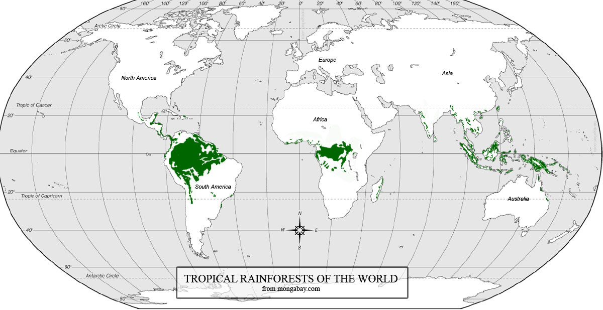

Tropical Rainforests> |
|
|---|---|
LocationTropical Rainforests are found near the equator (between 15* North and South or between the Tropics) where the sunlight is more concentrated. This heats the moist air causing it to rise and form clouds which causes the wet and humid weather associated with tropical rainforests |
 |
Plant AdaptationEmergentsEmergents are trees (e.g kapoks) who out compete others by growing extremely quickly to reach the canopy (and sunlight) to photosynthisise. |